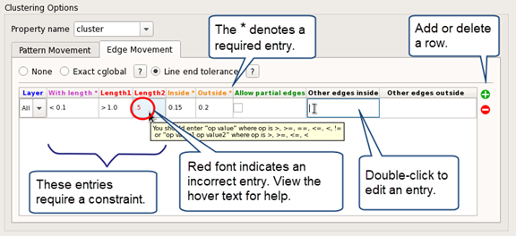

You can group
similar patterns in a pattern library into a cluster using the Calibre
Pattern Matching GUI. Clustering patterns is helpful for generalizing
patterns; that is, grouping similar patterns together and determining
minimum and maximum constraints that may apply to a group of patterns.
You can also save a library in which each group of clustered patterns
is represented by a pattern with constraints, thus reducing the
number of patterns in the library.
You can also apply clustering to your pattern
library with the pdl_lib_mgr cluster utility.
Tip Some options in the Cluster Dialog dialog
box include a help button,
which displays a small diagram demonstrating the effect of the option.
Procedure
- Select
the pattern library to cluster in the pattern library list.
- Choose to open the
Cluster Library dialog box, or click the button.
- Specify the output files and
formats in the Output Files section.
Path —
The filename for the clustered library. You can specify an absolute
or relative path.
Generate OASIS file —
(Optional) Generate an OASIS database consisting of pattern shapes
for each pattern, where each cluster is placed in its own OASIS
cell. The write_oasis utility
with the cluster option is used to generate the OASIS database.
Compress library path —
(Optional) Generate a compressed library in addition to the clustered
library. A compressed library contains one “cluster pattern” for
each cluster group, where the cluster pattern includes constraints
such that each pattern in the cluster is represented. Each cluster
pattern includes a property named Cluster_size that contains the
number of patterns represented by the cluster pattern.
- Specify
the property name for the cluster property. The default is “cluster”.
The cluster property is added to all patterns that
are part of a cluster, with an integer value corresponding to the
cluster number. Patterns that are not part of a cluster do not receive
a cluster property.
- Select options on the Pattern
Movement tab in the Clustering Options area.
None —
Do not use “Allowed shift” or “Center halo.”
Allowed shift —
Allow the pattern center to shift by the specified “Shift Value.”
Center halo —
Specify a center halo region. Exact matching is used in the center halo
region. Any options specified on the Edge Movement tab
apply to the region outside the center halo.
Halo Radius —
Specifies the size of the center halo region, which is a square
region centered on the pattern center and with a width of twice
the “Halo Radius” value.
Ignore outer halo —
Specifies to only use the center halo region to determine cluster
matches (corresponds to the crop option for the cluster utility).
This option disables selections on the Edge Movement tab.
- Select
options on the Edge Movement tab in the Clustering
Options area.
None —
Do not allow edge movement.
Exact cglobal —
Allow edges of exact patterns to move by the specified cglobal value
when determining a cluster match. The cglobal value should be less
than 1/4 of the minimum feature size (width or spacing) in the pattern.
Line end tolerance —
Allow movement of line ends when determining a cluster match.
The parameters correspond to the line_ends option of the cluster
utility.
Figure 1. Cluster
Library Dialog Box
Layer —
The layer to which the line-end tolerance applies. “All” denotes
all layers.
With length —
A constraint specifying the line-end length required in order for the
line-end tolerance to be applied.
Length1 —
A constraint specifying the length of one side of the line end.
If Length2 is not specified, the constraint applies to only one
side of the line end.
Length2 —
A constraint specifying the length of the second side of the line
end.
Inside —
The allowed movement to the inside.
Outside —
The allowed movement to the outside.
Allow partial edges —
Include line ends with partial edges (edges with one or two vertices
that lie on the pattern extent and at least one adjacent edge that
is a virtual edge).
Other edges inside —
The allowed movement to the inside for edges that do not satisfy
the line-end criteria (With length, Length1, and Length2).
Other edges outside —
The allowed movement to the outside for edges that do not satisfy
the line-end criteria.
- Specify
Run Options.
Generate cluster script only —
Saves the cluster command line to the specified file.
Run turbo (‑turbo) —
Specifies the ‑turbo argument for the cluster utility, which enables
multithreaded parallel processing with the specified number of processors.
- Click Run to
apply clustering to the library.
Results
A transcript pane is displayed in the dialog box. The transcript
includes the compile command line and transcript output.
The generated output files are listed; click the icon
to open a file.